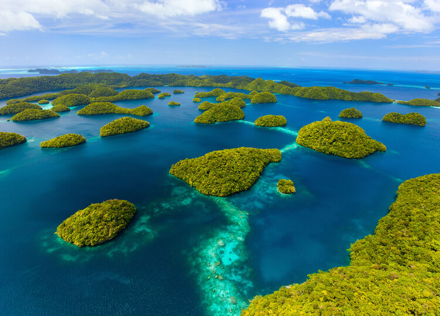

Тропічна перлина Тихого океану
Соломонові Острови — це острівна держава, розташована в південно-західній частині Тихого океану. Держава складається з понад 900 островів, із яких основними є Гуадалканал, Малаїта, Санта-Ісабель, Чойсіл, Нова Джорджія та Сан-Крістобаль. Столиця — місто Хоніара, яке знаходиться на острові Гуадалканал.
Природа та екологія
Природа Соломонових Островів відзначається багатством та унікальністю, завдяки чому регіон є важливим екологічним осередком в Тихому океані. Острови покриті густими тропічними лісами, де мешкає безліч ендемічних видів флори та фауни. Ліси багаті на орхідеї, пальми, ліани та інші рослини, а в них живуть унікальні види птахів, як-от соломоновий морський орел та численні види папуг. Навколишні коралові рифи є одними з найкрасивіших у світі, вони слугують домівкою для безлічі морських мешканців: тропічних риб, акул, морських черепах та дельфінів. Проте корали зазнають значної шкоди через підвищення температури океану та забруднення вод. Основні екологічні проблеми на островах включають вирубку лісів, яка негативно впливає на місцеву екосистему, та браконьєрство, яке загрожує зникненням багатьом рідкісним видам. Крім того, кліматичні зміни викликають підвищення рівня моря, що загрожує низинним районам і прибережним екосистемам. Місцеві громади й міжнародні організації працюють над збереженням природного багатства островів, створюючи заповідники та програми екологічної освіти.
Культура і Традиції
Культура і традиції Соломонових Островів багаті та різноманітні, вони відображають меланезійське коріння та тисячолітню історію регіону. Більшість населення живе за традиційним укладом, що включає сильні зв’язки в сім’ї та племінних громадах. Важливу роль відіграють старійшини, які приймають рішення і зберігають знання про звичаї й обряди. Сімейні та громадські цінності — основа суспільного життя. Люди тут часто живуть великими родинами, а обмін подарунками та натуральними продуктами є звичайною практикою для підтримки зв’язків. Музика і танці також займають важливе місце в культурі. Традиційні меланезійські танці зазвичай супроводжуються ритмічними ударами барабанів, виготовлених вручну з місцевих матеріалів. Різьблення по дереву є одним із найвідоміших видів мистецтва Соломонових Островів. Майстри створюють маски, човни, різьблені скульптури та інші предмети, що часто мають духовне значення. Одним із цікавих ремесел є створення черепашкових виробів і прикрас із натуральних матеріалів, таких як черепашки та кістки. Серед традицій — церемонії кава, схожі на фіджійські, де напій із кореня кави споживається як символ єднання та поваги. Місцеві релігійні вірування часто переплітаються з християнством, яке було принесене місіонерами, і значна частина населення поєднує вірність обом системам вірувань.

Сучасне життя і суспільство
Сучасне життя на Соломонових Островах поєднує традиційні цінності та вплив сучасної культури. Більшість населення живе у сільських районах, де зберігаються стародавні звичаї та зв’язки в родині. Сільське господарство, рибальство та ремесла залишаються основними джерелами доходу для багатьох сімей. Освіта на островах має певні виклики: багато дітей не закінчують навчання через віддаленість шкіл і бідність. Однак уряд і міжнародні організації працюють над покращенням доступу до освіти. Охорона здоров’я також потребує поліпшення, зокрема у забезпеченні медичних послуг у віддалених районах. Культура та традиції активно зберігаються через різноманітні святкування, фестивалі та церемонії. Християнство стало основною релігією, але багато місцевих вірувань продовжують впливати на повсякденне життя. Популярні види відпочинку включають спортивні заходи, такі як регбі, а також водні види спорту. Незважаючи на сучасні виклики, громади залишаються згуртованими, зберігаючи свою ідентичність і культуру.
Підсумок
Соломонові Острови — це острівна держава в Тихому океані, відзначена унікальною природою, багатою культурою та різноманіттям. Вони славляться ендемічними видами флори і фауни, тропічними лісами та кораловими рифами. Острови мають значну історію, зокрема участь у Другій світовій війні, і зберігають традиції, що передаються з покоління в покоління. Сучасне життя жителів поєднує традиційні цінності з сучасними впливами, проте вони стикаються з екологічними та соціальними викликами.